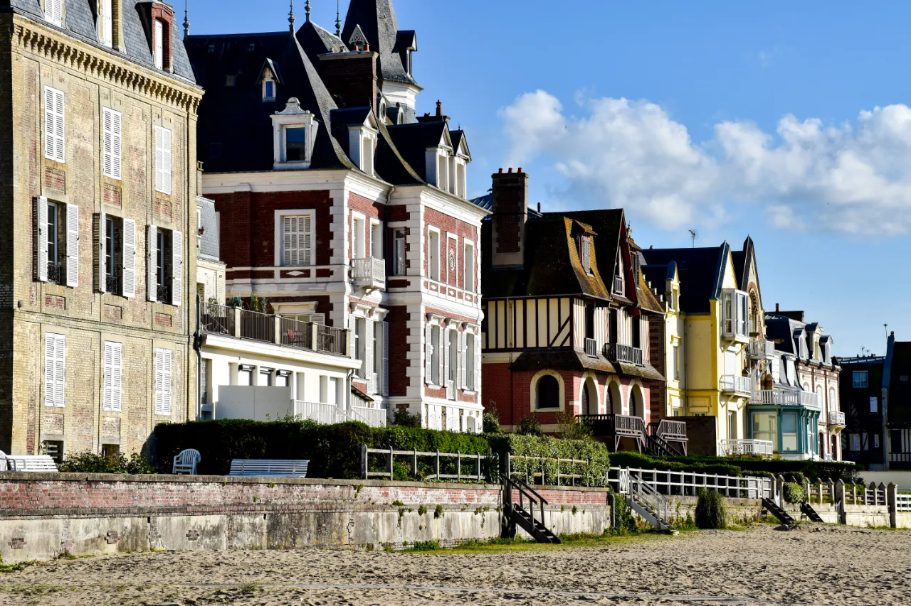
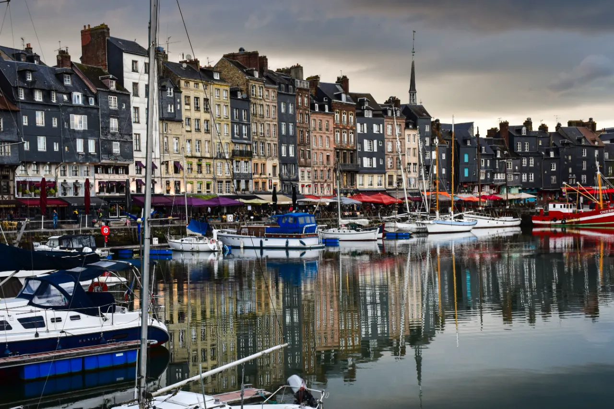
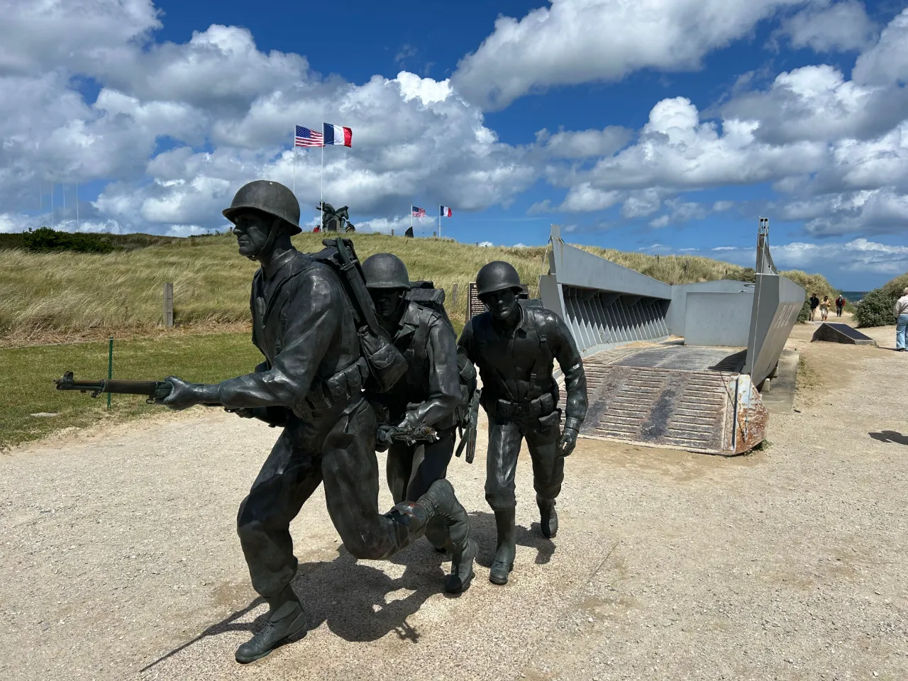
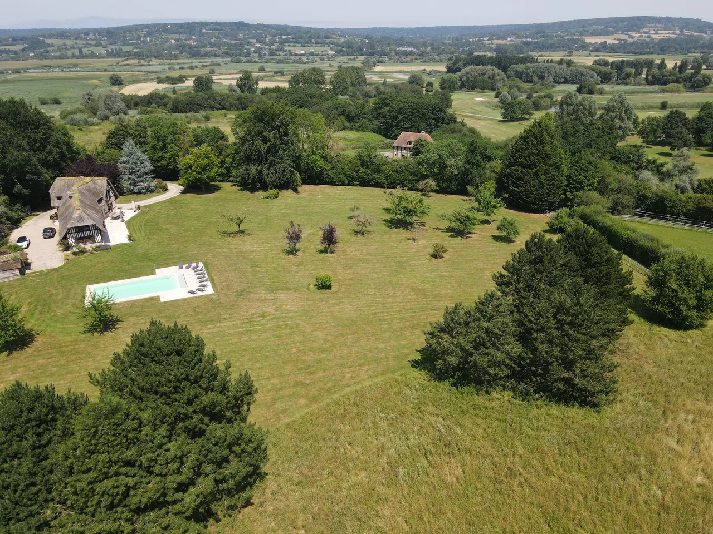

Around 5 kmDeauville
The Boardwalk, the Casino Barrière, the beach, the racecourses and golf courses. Shops and fine restaurants, in and out of season.

The estate is not just near Deauville: it is nestled in the heart of the Pays d’Auge, between two stud farms, among meadows and orchards.
Leave the main road and you find sunken lanes, half-timbered houses and cider farms, the very identity of inland Normandy.
The estate is surrounded by two stud farms. The Pays d’Auge is one of France’s great horse-breeding regions.
Hedged meadows, apple trees and Norman cows: a bocage landscape to explore on foot or by bike.
Beuvron-en-Auge, Beaumont-en-Auge, Pont-l’Évêque: half-timbering, market halls and stone churches.
Gentle valleys, sea views and ever-changing light, from the Côte Fleurie to the hills.
Pont-l’Évêque, Livarot, Camembert, cider and Calvados, to discover at markets and from local producers.
The Cider Route and the winding lanes between farms and manor houses.
Approximate distances from the house, by road.

Around 5 kmThe Boardwalk, the Casino Barrière, the beach, the racecourses and golf courses. Shops and fine restaurants, in and out of season.

Around 6 kmAcross the Pont des Belges: the fishing port, the fish market, the long beach and seaside villas.
 Around 20 km
Around 20 kmThe Vieux Bassin, the wooden Sainte-Catherine church, art galleries and cobbled lanes.
 Around 75 km
Around 75 kmVia the Pont de Normandie: the cliffs, the arches and the coastal paths.

Around 50 kmThe Caen Memorial, then the beaches and remembrance sites of 1944, for an unforgettable day.
